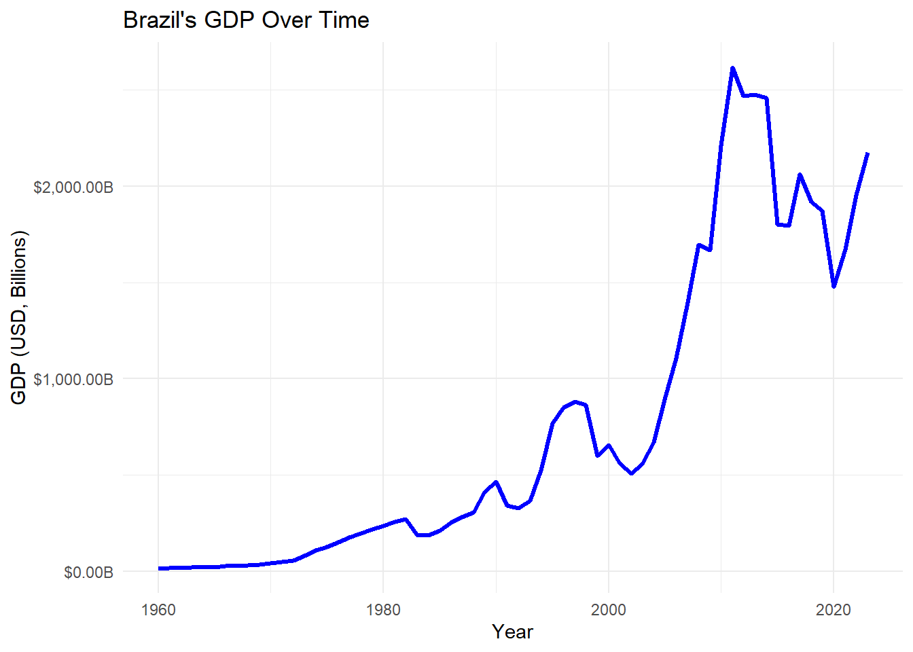
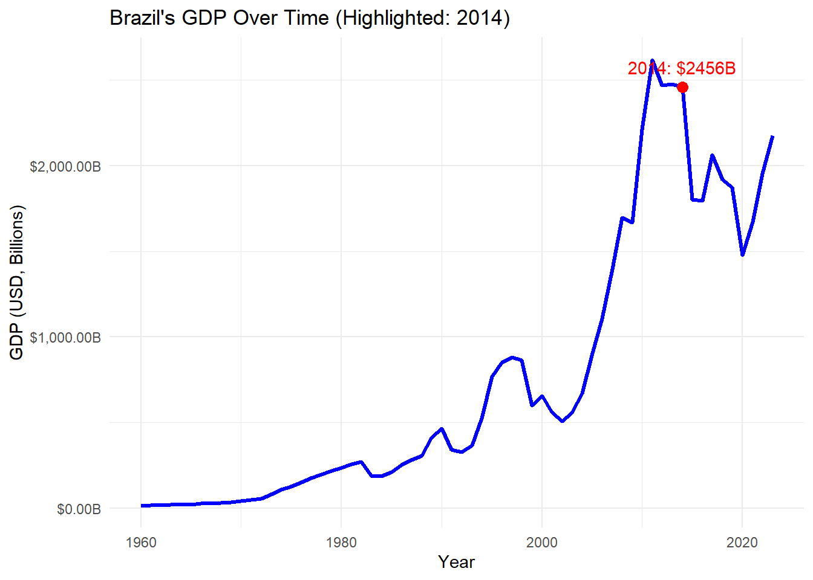
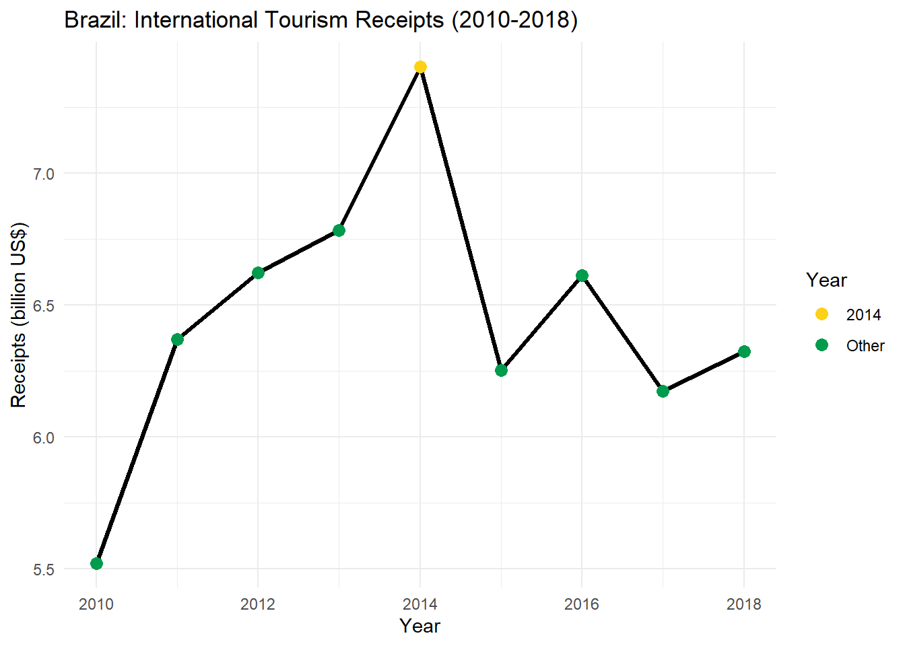
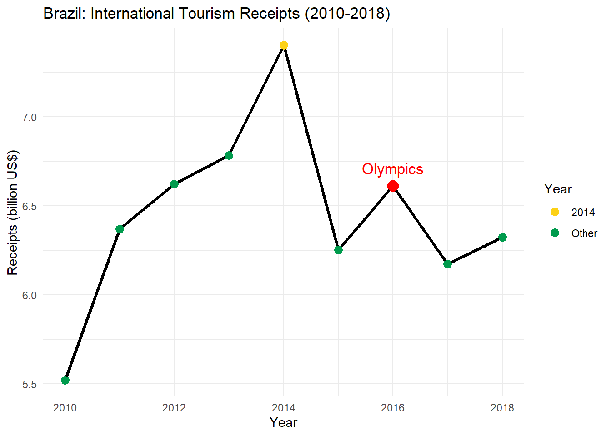
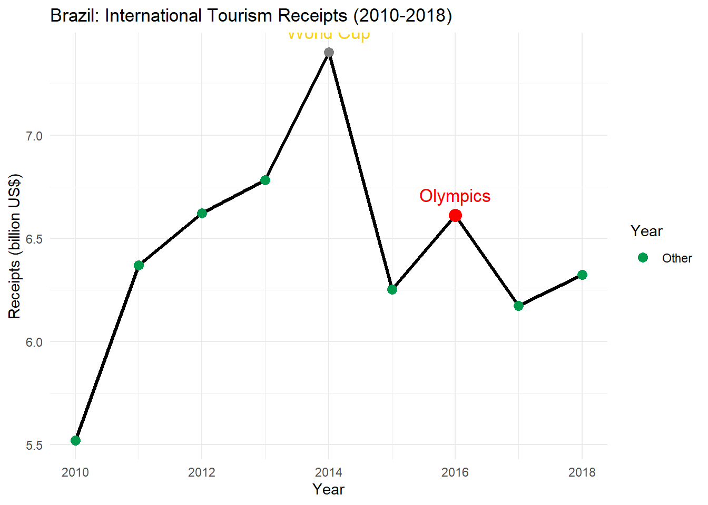

7 PJ P
Code

Code
# Extract 2014 GDP value
gdp_2014 <- brazil_gdp %>% filter(Year == 2014)
ggplot(brazil_gdp, aes(x = Year, y = GDP)) +
geom_line(color = "blue", size = 1.2) +
geom_point(data = gdp_2014, aes(x = Year, y = GDP), color = "red", size = 3) +
geom_text(
data = gdp_2014,
aes(label = paste0("2014: $", round(GDP / 1e9, 1), "B")),
vjust = -1, hjust = 0.5,
color = "red"
) +
scale_y_continuous(labels = dollar_format(scale = 1e-9, suffix = "B")) +
labs(
title = "Brazil's GDP Over Time (Highlighted: 2014)",
x = "Year",
y = "GDP (USD, Billions)"
) +
theme_minimal()
The visualization shows how Brazil’s GDP was higher before the world cup most likely because they knew they would be hosting it and the government was spending money to get ready for it and then during the world cup it was high because they were bringing in a lot of money hosting it. However after the world cup the GDP dropped by a good amount most likely because now the government wasn’t spendning money or bringing in money from the world cup so it dropped.
Code
summary_stats <- brazil_gdp %>%
summarize(
Years_Available = sum(!is.na(GDP)),
First_Year = min(Year[!is.na(GDP)]),
Last_Year = max(Year[!is.na(GDP)]),
Min_GDP = min(GDP, na.rm = TRUE),
Max_GDP = max(GDP, na.rm = TRUE),
Mean_GDP = mean(GDP, na.rm = TRUE),
Median_GDP = median(GDP, na.rm = TRUE),
SD_GDP = sd(GDP, na.rm = TRUE)
)
# View the summary
print(summary_stats)# A tibble: 1 × 8
Years_Available First_Year Last_Year Min_GDP Max_GDP Mean_GDP Median_GDP
<int> <dbl> <dbl> <dbl> <dbl> <dbl> <dbl>
1 64 1960 2023 17030465539. 2.62e12 7.62e11 3.91e11
# ℹ 1 more variable: SD_GDP <dbl>Data Frame Summary
gdp_long
Dimensions: 17024 x 1
Duplicates: 2843
-------------------------------------------------------------------------------------------------------------
No Variable Stats / Values Freqs (% of Valid) Graph Valid Missing
---- ----------- ---------------------------------------- ----------------------- ------- --------- ---------
1 GDP Mean (sd) : 1.18472e+12 (5.489324e+12) 14180 distinct values : 14307 2717
[numeric] min < med < max: : (84.0%) (16.0%)
2585956 < 16921087955 < 1.061717e+14 :
IQR (CV) : 1.99009e+11 (4.6) :
:
-------------------------------------------------------------------------------------------------------------Code
gdp_by_country <- gdp_long %>%
group_by(`Country Name`) %>%
summarize(
start_year = min(Year, na.rm = TRUE),
end_year = max(Year, na.rm = TRUE),
num_years = sum(!is.na(GDP)),
min_gdp = min(GDP, na.rm = TRUE),
max_gdp = max(GDP, na.rm = TRUE),
mean_gdp = mean(GDP, na.rm = TRUE),
median_gdp = median(GDP, na.rm = TRUE),
sd_gdp = sd(GDP, na.rm = TRUE),
total_gdp = sum(GDP, na.rm = TRUE)
) %>%
arrange(desc(mean_gdp)) # Optional: sort by average GDP# A tibble: 10 × 10
`Country Name` start_year end_year num_years min_gdp max_gdp mean_gdp
<chr> <dbl> <dbl> <int> <dbl> <dbl> <dbl>
1 World 1960 2023 64 1.37e12 1.06e14 3.36e13
2 High income 1960 2023 64 1.09e12 6.83e13 2.46e13
3 OECD members 1960 2023 64 1.06e12 6.47e13 2.36e13
4 Post-demographic divi… 1960 2023 64 1.04e12 6.05e13 2.24e13
5 Europe & Central Asia 1960 2023 64 4.26e11 2.76e13 1.04e13
6 IDA & IBRD total 1960 2023 64 3.62e11 4.17e13 1.02e13
7 IBRD only 1960 2023 64 3.15e11 3.88e13 9.37e12
8 North America 1960 2023 64 5.83e11 2.99e13 9.31e12
9 Low & middle income 1960 2023 64 2.75e11 3.75e13 8.89e12
10 East Asia & Pacific 1960 2023 64 1.57e11 3.12e13 8.73e12
# ℹ 3 more variables: median_gdp <dbl>, sd_gdp <dbl>, total_gdp <dbl>Code
library(tidyverse)
# Skip the first three rows to get to the real header row
tourism_data <- read_csv("../../data/API_ST.INT.RCPT.CD_DS2_en_csv_v2_19613.csv", skip = 3)
# Filter for Brazil and select only year columns
brazil_data <- tourism_data %>%
filter(`Country Name` == "Brazil") %>%
select(`Country Name`, matches("^\\d{4}$")) # Select only year columns
# Reshape for plotting
brazil_long <- brazil_data %>%
pivot_longer(
cols = -`Country Name`,
names_to = "Year",
values_to = "Receipts"
) %>%
mutate(
Year = as.integer(Year),
Receipts = as.numeric(Receipts) / 1e9 # Convert to billions
) %>%
filter(Year >= 2010 & Year <= 2018) %>%
mutate(
Highlight = if_else(Year == 2014, "2014", "Other") # Highlight 2014
)
# Plot with line connecting all years and 2014 highlighted
ggplot(brazil_long, aes(x = Year, y = Receipts)) +
geom_line(color = "black", size = 1.2) + # Line connecting all years
geom_point(aes(color = Highlight), size = 3) + # Points with different color for 2014
scale_color_manual(values = c("2014" = "#FCD116", "Other" = "#009B4D")) + # Color 2014 differently
labs(
title = "Brazil: International Tourism Receipts (2010-2018)",
x = "Year",
y = "Receipts (billion US$)",
color = "Year"
) +
theme_minimal()
Code
ggplot(brazil_long, aes(x = Year, y = Receipts)) +
geom_line(color = "black", size = 1.2) + # Line connecting all years
geom_point(aes(color = Highlight), size = 3) + # Points with different color for 2014
geom_point(data = subset(brazil_long, Year == 2016),
aes(x = Year, y = Receipts),
color = "red", size = 4) + # Red dot for 2016
geom_text(data = subset(brazil_long, Year == 2016),
aes(label = "Olympics"),
vjust = -1, color = "red", size = 4.5) + # Label for 2016
scale_color_manual(values = c("2014" = "#FCD116", "Other" = "#009B4D")) + # Color 2014 differently
labs(
title = "Brazil: International Tourism Receipts (2010-2018)",
x = "Year",
y = "Receipts (billion US$)",
color = "Year"
) +
theme_minimal()
Code
brazil_long$Highlight <- ifelse(brazil_long$Year == 2014, "World Cup",
ifelse(brazil_long$Year == 2016, "Olympics", "Other"))
ggplot(brazil_long, aes(x = Year, y = Receipts)) +
geom_line(color = "black", size = 1.2) + # Line connecting all years
geom_point(aes(color = Highlight), size = 3) + # Points with different color for 2014
geom_point(data = subset(brazil_long, Year == 2016),
aes(x = Year, y = Receipts),
color = "red", size = 4) + # Red dot for 2016
geom_text(data = subset(brazil_long, Year == 2016),
aes(label = "Olympics"),
vjust = -1, color = "red", size = 4.5) + # Label for 2016
geom_text(data = subset(brazil_long, Year == 2014),
aes(label = "World Cup"),
vjust = -1, color = "#FCD116", size = 4.5) + # Label for 2014
scale_color_manual(values = c("2014" = "#FCD116", "Other" = "#009B4D")) + # Color 2014 differently
labs(
title = "Brazil: International Tourism Receipts (2010-2018)",
x = "Year",
y = "Receipts (billion US$)",
color = "Year"
) +
theme_minimal()